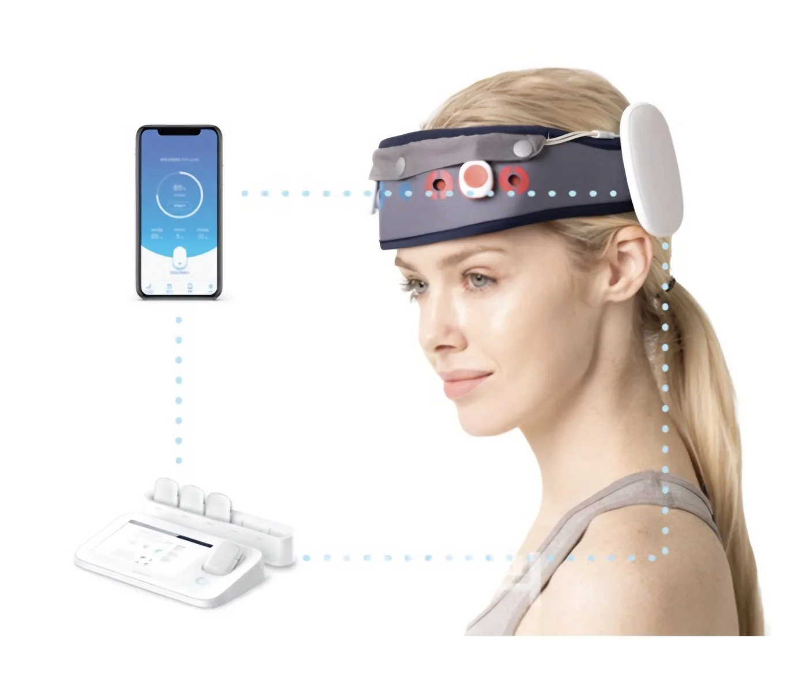
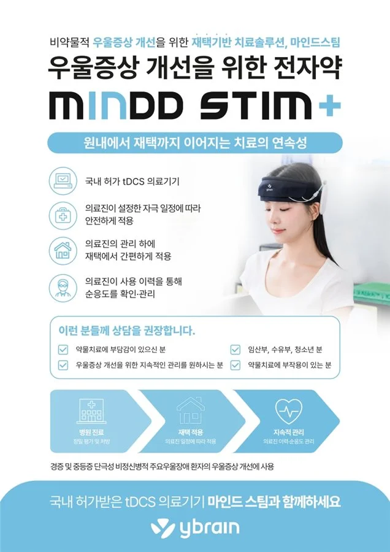
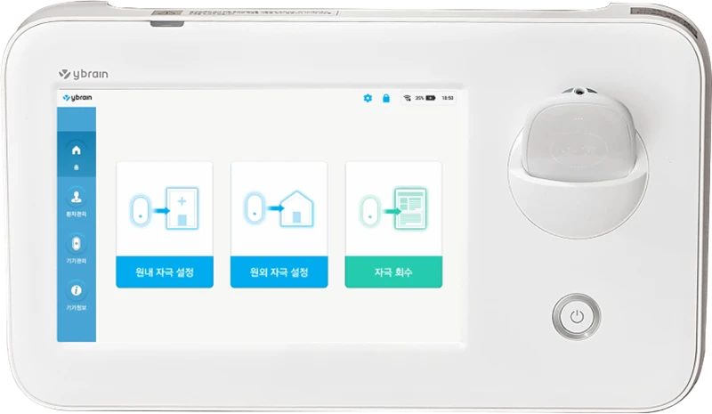

Mild to moderate depression
When symptoms such as low mood, lack of motivation, reduced interest, or trouble concentrating persist, tDCS can be considered as a supportive treatment alongside medication.
Transcranial Direct Current Stimulation
A mild direct current that helps regulate the brain's neural activity.

tDCS (transcranial Direct Current Stimulation) is a non-invasive neuromodulation treatment that uses a mild direct current to regulate the brain's neural activity.
Electrodes are attached to the scalp and deliver a very mild direct current that regulates the neural activity of the cerebral cortex.
tDCS has been studied for depression, particularly for mild to moderate depression and in combination with antidepressant treatment. It can help support improvement during the early stage of antidepressant treatment, or be considered as one of several non-drug treatments for those who find medication burdensome.


When symptoms such as low mood, lack of motivation, reduced interest, or trouble concentrating persist, tDCS can be considered as a supportive treatment alongside medication.
Antidepressants need a certain amount of time before their full effect appears. During this early stage, tDCS can be considered for those who want to combine medication with a non-drug treatment.
Even when medication feels burdensome or isn't preferred, tDCS can be considered as one of several non-drug treatments after evaluating symptom severity and treatment goals. That said, tDCS cannot replace medication in every case, so symptom severity and treatment need are evaluated together.
For depression during pregnancy, where medication decisions need extra care, tDCS can be considered as one of several non-drug treatments. However, since clinical research and long-term safety data on tDCS during pregnancy remain limited, treatment decisions are made only after thoroughly evaluating the pregnancy and symptom severity.
Electrodes attached to the scalp deliver a very mild direct current to a specific area of the brain.
The current affects how readily nerve cells in the cerebral cortex activate, regulating the activity of specific neural circuits.
tDCS isn't completed in a single session — it's repeated over a period of time while treatment response is monitored.
tDCS isn't applied the same way to everyone.
We comprehensively check your current symptoms and diagnosis, sleep and stress levels, current medications, and response to prior treatment.
When needed, we also check your brain function with QEEG to inform this evaluation and assess whether tDCS is an appropriate treatment.
Based on this evaluation, we decide on the stimulation site and method that fit your treatment goal, and continue to monitor changes in symptoms throughout treatment.
Checking your current symptoms, diagnosis, and treatment progress.
When needed, QEEG is checked to inform the current state of brain function and determine whether tDCS is an appropriate treatment. This decision is never made from EEG results alone — it's considered together with the consultation, symptoms, and treatment progress.
The stimulation site, method, and treatment duration are decided based on the treatment goal.
Electrodes are attached to the scalp and a mild direct current is delivered for a set period of time.
Changes in symptoms and any discomfort are checked throughout repeated sessions, and the treatment plan is adjusted as needed.
A single session takes about 20 to 30 minutes.
tDCS is repeated over a period of time while treatment response is monitored. Sessions are typically considered about 2 to 3 times a week at first, with the number and interval adjusted according to symptom severity, treatment response, and scheduling.
When needed, the interval can be adjusted after initial treatment to shift into maintenance sessions, or — after evaluation and training by the medical team — treatment can continue as home-based tDCS.
At the start of treatment, you may feel a slight tingling or itching sensation where the electrodes touch your skin.
This is usually mild and temporary, and you can let the medical team know right away if you feel any discomfort during treatment.
tDCS is a non-invasive treatment with relatively few side effects.
Temporary skin redness or irritation, mild headache, or fatigue may occur.
When treatment during pregnancy is being considered, gestational age, overall health, and the severity of depression are checked separately, and the decision to proceed is made carefully.
Q. Can I receive tDCS while taking antidepressants?
Yes. tDCS can be combined with medication. After checking your current treatment stage and medications, we decide on an appropriate treatment approach.
Q. Do I need to stop medication right away if I start tDCS?
No. Starting tDCS does not mean discontinuing any medication on your own. Whether to continue or adjust medication is decided while monitoring treatment response.
Q. Can I receive tDCS even if I don't want medication?
Symptom severity and treatment need are evaluated first. If medication feels burdensome or isn't preferred, tDCS can be considered as one of several non-drug treatments. However, if symptoms are severe or another treatment is clearly necessary, we discuss the most appropriate approach together rather than insisting on tDCS alone.
Q. Can I receive tDCS during pregnancy?
Research into tDCS for depression during pregnancy is ongoing. It can be considered as one of several non-drug treatments for depression during pregnancy, where medication decisions require extra care, but research and long-term safety data on tDCS during pregnancy remain limited. We carefully decide on treatment after checking gestational age, symptom severity, and overall health.
Q. What's the difference between TMS and tDCS?
Both are non-invasive treatments that regulate brain activity, but they deliver stimulation differently. TMS uses a magnetic field to stimulate the brain, while tDCS delivers a mild direct current through electrodes on the scalp. The treatment method is decided based on diagnosis, symptom severity, treatment stage, and goals.
Q. Can tDCS help with treatment-resistant depression?
Some studies report that tDCS may help with treatment-resistant depression, but TMS currently has more established evidence and clinical use. So for treatment-resistant depression, rather than choosing between tDCS and TMS as equivalent options, we decide on the most appropriate treatment based on your treatment course and situation as a whole.
Q. Can tDCS be used for insomnia or ADHD?
Research into non-invasive brain stimulation, including tDCS, for insomnia and ADHD is underway, but the evidence isn't yet at the same level as for depression. So at MoonGyeol, rather than presenting tDCS as a standard treatment for insomnia or ADHD, we prioritize treatments with established evidence for each condition.
Q. Can tDCS be used for cognitive decline?
Research into tDCS and cognitive function is ongoing, but the level of evidence varies by condition and symptom. So rather than viewing it as a standard treatment for cognitive decline itself, it can be considered as a supportive option alongside existing treatment when appropriate.
Q. Do I need an EEG before treatment?
At MoonGyeol, we check EEG (QEEG) when needed to inform the current state of brain function and assess whether tDCS is an appropriate treatment. This is never decided from EEG results alone — it's considered together with the consultation, symptoms, and treatment progress.
Q. How many sessions will I need?
With tDCS, repeating treatment over a period of time matters more than a single session. Studies have used a range of approaches, from relatively intensive treatment (such as 5 times a week) to 2–3 times a week, so the same number of sessions isn't applied to every patient. At MoonGyeol, we typically plan about 2 to 3 sessions a week at first based on your symptoms, treatment goals, and response, then adjust the number and interval as treatment progresses. If your response is maintained, the interval can gradually be extended or shifted to maintenance treatment, and home-based tDCS can also be considered to continue treatment when appropriate.
Q. Can I receive tDCS treatment at home?
Home-based tDCS can be considered when appropriate. However, it isn't applied to every patient right away — a consultation and suitability evaluation come first, and home treatment is considered only when training and oversight by the medical team are possible. Treatment response and any discomfort continue to be checked during home treatment, and the method and frequency are adjusted as needed.
We'll look at your diagnosis and treatment history together and advise on whether tDCS is an appropriate treatment.